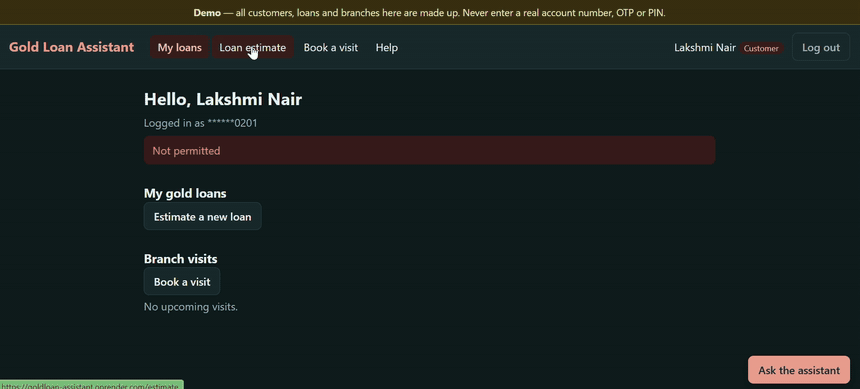

Featured project · built for Muthoot Finance, 2026
Muthoot gold-loan voice assistant
After seeing CareFlow, an interviewer asked me to build a version for Muthoot Finance, India's largest gold-loan company, on Gnani's speech APIs. Customers get a loan estimate from their gold's weight and purity, book a valuation visit at a branch and check what they owe, by text or voice in English, Hindi, Kannada, Malayalam and Tamil. Every estimate that turns into a booked visit is tracked as a lead for the branch, which runs a live walk-in queue.
- Cut time to first audio by 40%, from 7.4 s to 4.6 s at P50, by speaking a short first piece of each reply while the rest is synthesised.
- Financial safety guardrails enforced in code: never asks for an OTP or PIN, never promises an amount, no investment advice, account numbers masked; 139 of 413 tests cover them in CI.
- Built around a strict speech-API quota: one request at a time, retries, usage caps and replayed audio for repeated sentences, so voice falls back to text instead of failing.
- Reliability: Gemini → Ollama → rule-based failover with circuit breakers; 1,134 requests from 50 simulated customers with 0 failures. An embedding classifier lifted intent accuracy on indirect phrasing from 12% to 68%.